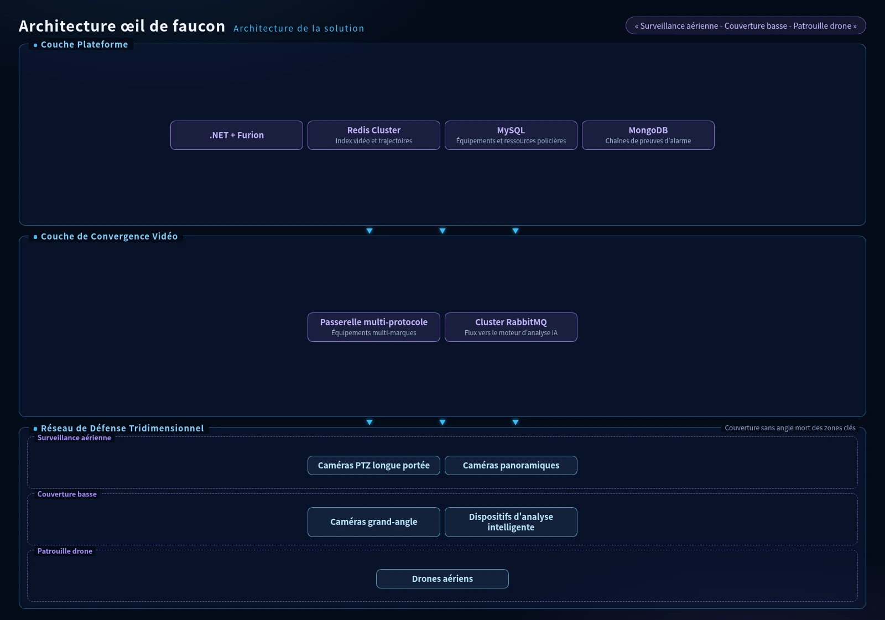
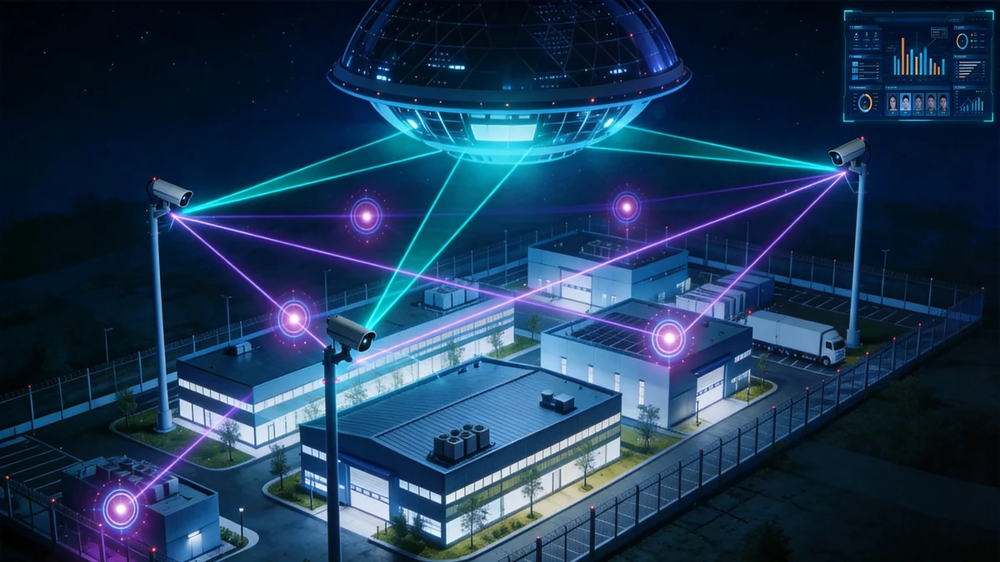
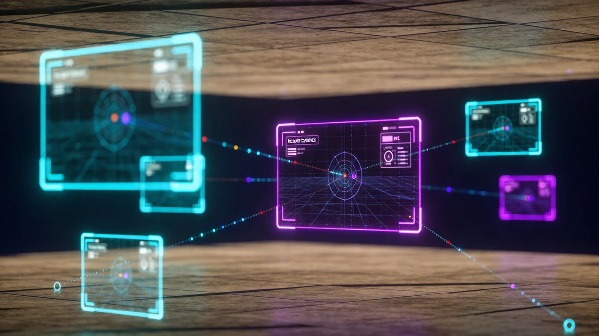

Architecture de la Solution

Architecture défense stéréoscopique œil de faucon
Le Système Oeil de Faucon Urbain construit un réseau de défense tridimensionnel de Surveillance Haute Altitude, Couverture Basse Altitude et Patrouille Aérienne. Les points hauts déploient des caméras PTZ longue focale et panoramiques, les points bas déploient des dispositifs grand-angle et d'analyse intelligente, et les drones patrouillent pour couvrir les angles morts, convergent vers une passerelle multi-protocoles via MQTT / RTSP / HTTP pour une couverture sans faille des zones urbaines clés. La couche de convergence vidéo pousse les flux vers un moteur d'analyse AI via des clusters RabbitMQ. La couche plateforme est construite sur .NET 8.0 + ASP.NET Core + Furion, avec Redis Cluster mettant en cache les index vidéo et les données de trajectoires, MySQL gérant les équipements et les ressources policières, MongoDB stockant les chaînes de preuves d'alarmes, SqlSugar fournissant le mappage ORM multi-sources, et DotNetCore.CAP garantissant la cohérence transactionnelle distribuée pour l'escalade d'alarmes et les commandes de dispatch. La couche application construit un tableau de bord de commande et de dispatch avec Vue 3 + Element Plus, réalisant la reconnaissance en temps réel d'événements anormaux comme les rassemblements de personnes, le stationnement illégal et la fumée d'incendie, la poussée automatique d'alarmes et l'allocation visuelle des ressources; les clients de commande de bureau sont construits sur WPF ou .NET MAUI. DevOps utilise Git + Jenkins + NuGet/NPM pour l'intégration et le déploiement continus, avec Docker + Kubernetes pour le déploiement élastique.
Composition de la Solution

Scénarios d'Application

Scénarios œil de faucon urbain
Adapté à la surveillance des zones urbaines clés, à la sécurité des grands événements, au dispatch de commande d'urgence, à la surveillance des incendies de forêt et à la patrouille côtière. Intégré aux plateformes de commande de sécurité publique pour réaliser une réponse rapide « découverte - analyse - dispatch - traitement ».
Avantages de la Solution
Une seule caméra de surveillance aérienne peut couvrir un rayon de 3 à 5 kilomètres, équivalent à la couverture de dizaines de caméras ordinaires. L'analyse intelligente IA remplace la surveillance manuelle des écrans avec une précision d'alarme dépassant 95%, réduisant significativement les coûts d'opération sécurité. Liée au système de drones, elle réalise une boucle fermée de réponse rapide « découverte - positionnement - traitement ».
Valeur de la Solution
Amélioration significative du taux de couverture de la sécurité dans les zones urbaines clés et de la vitesse de réponse aux incidents, fournissant une protection « œil dans le ciel » pour la gestion de la sécurité publique urbaine. Grâce à l'accumulation et l'analyse des données vidéo, elle fournit un support de données pour la planification urbaine et l'optimisation du trafic.
Pratique Projet
Dans la construction des systèmes basse tension et de sécurité pour les grands nœuds de transport tels que le Mile 2 Integrated Transport Hub, AXLTeco a déployé des équipements de surveillance aérienne et panoramique couvrant toute la zone, fournissant une protection sécurité stéréoscopique pour les environnements de trafic complexes.
